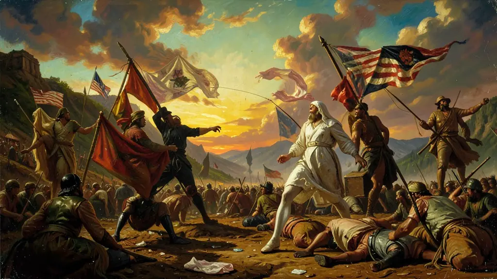
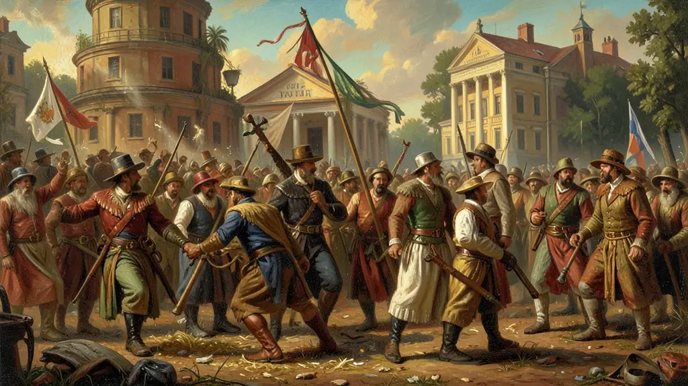

Capítulo 01
1. A Guerra dos Sete Anos: O Custo do Ouro
A Inglaterra venceu a França em 1763, mas ficou com os cofres vazios. A solução dos ingleses foi simples: fazer os colonos americanos pagarem a conta. Eles criaram a Lei do Selo para taxar jornais, a Lei do Açúcar para encarecer o melaço e a Lei do Chá para garantir o monopólio da Companhia das Índias Orientais. Os colonos, que antes viviam em relativa autonomia ('Negligência Salutar'), sentiram o peso do autoritarismo e decidiram que não pagariam um centavo a um Rei que não os deixava ter deputados no parlamento.

Capítulo 02
2. Boston Tea Party: O Chá no Mar
Em 1773, colonos disfarçados de indígenas invadiram navios ingleses no porto de Boston e jogaram toneladas de chá na água. Foi um prejuízo milionário e uma humilhação pública para a Coroa Inglesa. A reação do Rei George III foi brutas: as Leis Intoleráveis, que fechavam o porto de Boston e ocupavam a cidade com soldados. Em vez de se renderem, as Treze Colônias se uniram em um Congresso na Filadélfia, decidindo que a paz só viria agora com a espada.

Capítulo 03
3. Thomas Jefferson e o Grito de 1776
Jefferson era um homem de letras e ideais iluministas. Ele escreveu a Declaração de Independência com palavras que reverberam até hoje: 'Consideramos estas verdades como evidentes por si mesmas, que todos os homens são criados iguais'. Pela primeira vez, um rei foi chamado de tirano por escrito e oficialmente destituído do poder por um povo que clamava pelo seu direito de autogoverno. Esse texto inspirou inconfidentes no Brasil como Tiradentes, que sonhavam com uma república similar em Minas Gerais.
Capítulo 04
4. A Constituição de 1787: O Equilíbrio de Poder
Os americanos não queriam um novo rei. Eles criaram o sistema de **Checks and Balances** (Freios e Contrapesos): o Presidente não manda mais que o Juiz, que não manda mais que o Deputado. Essa engenharia política evitou o retorno da ditadura e garantiu que o poder nunca ficasse em uma mão só. Mas nem tudo era perfeito: a constituição ignorou os direitos das mulheres, dos negros (a escravidão continuou) e dos indígenas, uma ferida que os EUA levariam séculos para começar a tratar.
Capítulo 05
5. Impacto Global: A Faísca que Incendiou a Europa
O ENEM valoriza a conexão histórica. A Revolução Americana foi a 'Célula Mater' das revoltas burguesas. Sem ela, a França talvez não tivesse tido coragem de tomar a Bastilha em 1789. O sucesso de um país de agricultores coloniais contra o exército mais forte do mundo deu esperança para todos os revolucionários da América Latina. O Brasil Imperial olhava com medo para a liberdade dos vizinhos do norte, temendo que o vírus da democracia republicana cruzasse o Equador.
A Independência dos Estados Unidos (1776) foi a primeira das grandes revoluções liberais e o marco inicial da descolonização nas Américas. Motivada pelo aumento dos impostos britânicos após a Guerra dos Sete Anos (como as Leis do Selo e do Chá) e pela ausência de representação colonial no Parlamento inglês ('No taxation without representation'), o movimento uniu as Treze Colônias contra o imperialismo britânico. A Declaração de Independência, redigida por Thomas Jefferson, cristalizou os ideais iluministas de direitos inalienáveis à vida, liberdade e busca pela felicidade.
A estrutura da nova nação foi baseada em um modelo republicano e federalista, garantindo autonomia aos estados membros, mas centralizando questões de defesa e diplomacia. Contudo, a República Americana nasceu com uma profunda contradição: mantinha o regime de escravidão africana enquanto proclamava a igualdade de todos os homens. Esta tensão não resolvida entre os interesses do Norte industrializado e do Sul escravista levaria, décadas depois, à sangrenta Guerra de Secessão.
Para o Enem, a Revolução Americana deve ser analisada sob a ótica da ruptura com o sistema colonial mercantilista. Ela estabeleceu o primeiro regime democrático moderno, influenciando diretamente a Revolução Francesa e os movimentos de independência na América Latina. O estudo deste tema permite discutir como as ideias iluministas mudaram de um plano teórico europeu para uma prática institucional no Novo Mundo, inaugurando a era das repúblicas constitucionais.
Fonte: KARNAL, Leandro. História dos Estados Unidos: das Origens ao Século XXI. São Paulo: Contexto, 2007.
Atividades interativas
Questões para fixar
A principal motivação econômica que levou as Treze Colônias Americanas a buscarem a independência da Inglaterra no século XVIII foi:
O sistema político de 'Checks and Balances' (Freios e Contrapesos), instituído pela Constituição dos EUA de 1787, serve para:
Qual foi o principal motivo que levou os colonos das Treze Colônias a se rebelarem contra a Inglaterra?
Quem foi o autor da Declaração de Independência dos Estados Unidos?
Qual foi o resultado da vitória dos colonos na Guerra de Independência dos EUA?